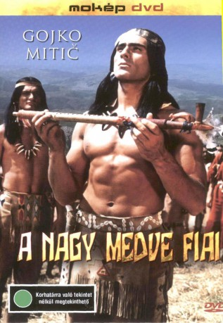

#5151 Die Söhne der großen Bärin
 
 IMDB-Wertung: 6.2 / 10
IMDB-Wertung: 6.2 / 10  Metascore: 0
Metascore: 0 
Tokei-ihto, Häuptling der "Söhne der großen Bärin" vom Stamme der Dakota, ist von Leutnant Roach nach Fort Smith bestellt worden. Er vermutet einen Verrat der Weißen und hätte lieber mit Oberhäuptling Tashunka-witko gegen sie gekämpft, aber die Ältesten haben anders entschieden. In Begleitung seines persönlichen Feindes Fred Clark, genannt Red Fox, angekommen, bestätigt sich sein Verdacht. Die Weißen wollen die Indianer von ihrem vertraglich zugesicherten Land vertreiben, denn dort wurde Gold gefunden. Tokei-ihto verweigert das Einverständnis, in eine Reservation auf unfruchtbarem Gebiet zu ziehen und wird eingekerkert. Als die kämpfenden Dakota geschlagen und umgesiedelt sind, läßt man ihn frei. Die anderen seiner Stammesgruppe haben ihren Fehler inzwischen eingesehen, und mit Tokei-ihto beschließen sie, ins freie Kanada zu fliehen. Eine erbitterte Verfolgung setzt ein. Während der Stamm die Grenzen passiert, stellt Tokei-ihto sich Red Fox zum letzten Kampf.
Jahr: 1966
Dauer: 88 Minuten
FSK: 12
Land: Ost-Deutschland Studio: Universal-InternationalTonspuren:
Untertitel:
Auflösung: 1080p (1920x816) Größe: 6717 MB
Genre: Western
Regisseur: Josef Mach
Drehbuch: Ken LaZebnik
Soundtrack:
Darsteller:
 Gojko Mitic als Tokei-Ihto
Gojko Mitic als Tokei-Ihto- Jirí Vrstála als Red Fox
- Jozef Adamovic als Tschapa
- Milan Jablonsky als Donner vom Berge
- Zofia Slaboszowska als Mongschongschah
- Rolf Römer als Tobias
- Hans Hardt-Hardtloff als Major Smith
- Gerhard Rachold als Leutnant Roach
- Horst Jonischkan als Adams
- Jozef Majercík als Tschetansapa
- Hannjo Hasse als Pitt
- Helmut Schreiber als Ben
- Jozo Lepetic als Bill
- Rolf Ripperger als Jok
- Brigitte Krause als Jenny
- Karin Beewen als Cate
- Ruth Kommerell als Tashina
- Kati Székely als Vinonah
- Slobodanka Markovic als Sitopanaki
- Hans Finohr als Hawandschita
- Adolf Peter Hoffmann als Matotaupa
- Martin Tapák als Schonka
- Horst Kube als Thomas
- Walter E. Fuß als Theo
- Sepp Klose als Tashunka-Witka
- Herbert Dirmoser als
- Willi Schrade als
- Günter Schubert als
- Franz Bonnet als
- Blanche Kommerell als
- Henry Hübchen als Young Man , uncredited
- Dietmar Richter-Reinick als Günter Schubert , uncredited
- Werner Schulz-Wittan als Major Smith , uncredited
- Heinz Suhr als Hawandschita , uncredited
Datei: X:\HD-Western-Collections\DDR-Western\Söhne der großen Bärin, Die (1966, FSK12, 1920x816).mkv seit 27.12.2016
Festplatte: HD Eastern+Western
 Es gibt insgesamt 15 Filme in der Gruppe 'HD-Western-Collections\DDR-Western'
Es gibt insgesamt 15 Filme in der Gruppe 'HD-Western-Collections\DDR-Western'